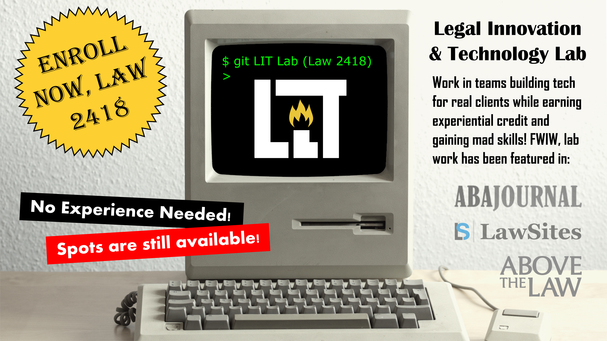

Legal Innovation & Technology Lab@ Suffolk Law School
Legal Innovation and Technology Lab (LAW 2418)

Build legal tech and data science projects (apps and analytics) for real-world clients while earning experiential credit! This lab is open to non-programmers and coders alike. Waivers for prerequisites are granted liberally. At the close of your first semester you may opt to take a second semester, space permitting. The spring offering is called LIT Lab II. You do not have to have had LIT Lab I to take LIT Lab II. This class qualifies as an elective for the Legal Innovation and Technology concentration.
Students will gain: (1) the experience of working with, solving problems for, and counseling clients; (2) a working understanding of design thinking and its application to the development of legal tech; (3) a high-level familiarity with the realm of the possible in legal tech, including a general understanding of data science and machine learning/narrow AI; (4) an understanding of the dangers and roots of algorithmic bias, including ethical considerations; (5) a working understanding of one or more specific technologies used in the execution of projects; and (6) a basic understanding of the ethical issues associated with work in legal tech.
Examples of past student work are shown below.
Sample Student Work
Geography-based Youth Service Finder, Suffolk’s Clinnovation Conference: Where Legal Innovation & Technology Meet Clinical Pedagogy
April 9, 2018 (Nicole Siino). When a juvenile is facing delinquency charges, courts often order youth to locate and participate in community programs as a condition of probation. Their ability to find and successfully participate in these programs can have long-lasting impacts on their sentences - and their futures. A constellation of social services exists for youths. These services, however, are offered by a variety of agencies, public and private, and make use of differing eligibility requirements. Additionally, access to such services is often dependent on physical proximity. Consequently, service discovery is a time-intensive process, and exhaustive exploration of services by youth and youth advocates is often impractical. For this reason, the lab is working on the creation of a tool that will allow users to filter service providers by location, age, and service type. Current thinking is focused on the creation of a map-based tool that allows users to search for and find relevant service providers as one might look for a restaurant an Yelp. Initially, this web application (website optimized to look good on a phone) will concern itself with service providers in the Boston metro area. However, the technology being used would allow for the expansion of this application to include expansion into more service types and areas. This will include documentation to help others create their own instances of the app.
Visit Working Web App. | How to Make Your Own. | Session Info
Aiding Access to Justice through Letter Automation, Suffolk’s Clinnovation Conference: Where Legal Innovation & Technology Meet Clinical Pedagogy
April 9, 2018 (William Bean, Corby King & Anthony Metzler). For years, HomeLine, a nonprofit Minnesota tenant advocacy organization has offered a number of legal form letters for download on their website (e.g. repair requests and security deposit demand letters), but many people in their service population don't have easy access to a printer or the internet outside of their phone. Consequently, they would like to produce a "chatbot" that helps users fill out and "mail" letters from their phones to their landlord addressing their housing issue. One of the board members likes to talk about "doing it all with your thumbs."
Codification of Tacit Knowledge via Algorithm, Suffolk’s Clinnovation Conference: Where Legal Innovation & Technology Meet Clinical Pedagogy
April 9, 2018 (Jeff Price & Charmain Wood). Palace Law is looking to encode its client selection criteria into an algorithm. Palace Law is a personal injury and workers’ compensation firm. Currently, when speaking with potential clients, they ask a number of questions about their case (e.g., are you still working, what type of injury do you have, etc.). An experienced employee then makes a determination as to whether or not something is a "good" case. Their goal is to teach an algorithm to assist in this classification by training it on historical data from potential clients. Consequently, they are in the process of establishing a data collection framework. Their ultimate goal is to discover predictors of a good case, where the measure of a good case takes into account a number of post-disposition metrics. In the near term, however, a replication and codification of existing decision criteria will work as a strong proof of principle. Their hope is to produce a classification that scores new calls with a quality ranking (e.g, 0-100).